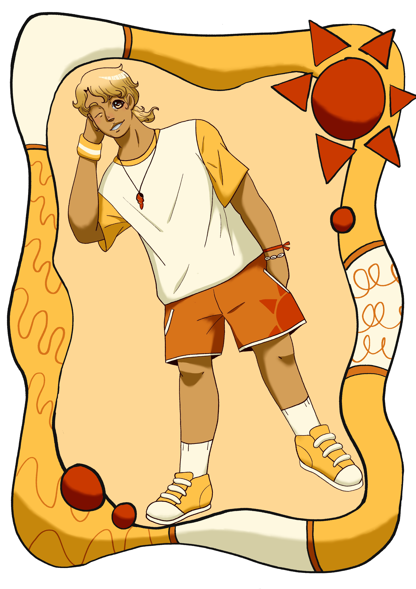

Quem é Luca?
Luca é um garoto alto e forte, tem cabelos loiros dourados e pela bronzeada de tanto ficar na praia. Ela adora esportes no geral, sempre participando de alguma jogatina por ai, mas o seu amor mesmo vai para o basquete, do qual é um dos melhores jogadores de sua escola.
Seus amigos são tudo para ele, principalmente Raphael, que conhece desde os 10 anos de idade. O pai de Raphael não permite que os dois tenham uma amizade, porque quando eram crianças eles apostaram uma corrida de bicicleta e Raphael quebrou o braço, e seu pai culpou Luca por isso. Não poder interagir normalmente com seu amigo o magoa profundamente, por isso quer fazer de tudo para que eles possam ser amigos em público e não se esconder das pessoas de sua escola.